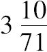
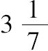
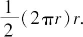
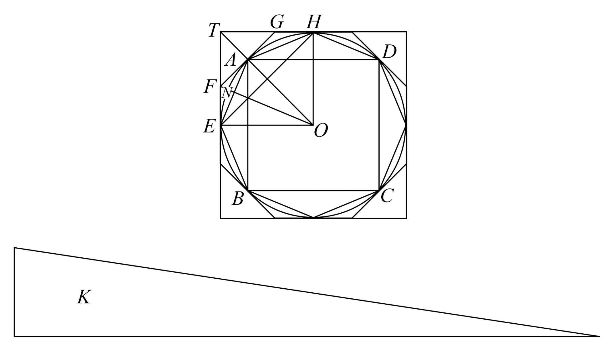
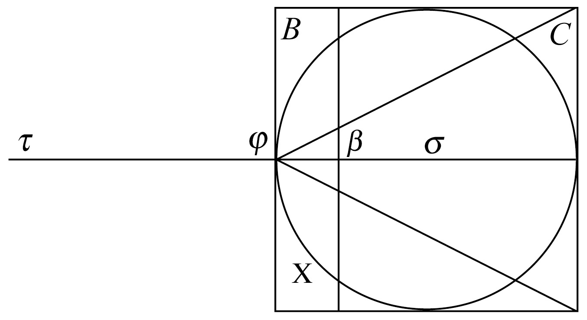

阿基米德（公元前287~前212）让人记忆最深的是，他在发现如何区别纯金皇冠后，跳出浴室赤身裸体地在大街上狂奔并高喊：“找到了！找到了！”．其次大家都知道，他发明过一个判别他们这些远古大数学家和冒充的骗子的方法．原来在古希腊的数学界，数学家们通常会把他们新发现的数学定理用公告发布，而不带相应的证明．当阿基米德怀疑有人声称他的结果是他们自己的时候，他会在自己的公告插入两三个假命题，这些命题的不成立，需要阿基米德用他的全部数学智慧来论证．当那些骗子声称这些假命题是他们自己的新发现时，他就举出反例来揭露这些人．
我们对于阿基米德的生平知道得很少．罗马将军马塞勒斯（Marcellus）写过，他的一个士兵在公元前212年的第二次布匿战争中杀死了阿基米德，而传说他直到75岁生命的最后时刻还在研究几何，由此可以推断他出生于公元前287年．阿基米德的父亲名叫菲迪亚斯（Phidias），是一个天文学家，居住在西西里岛上的希腊城市叙拉古（Syracuse），他的家庭与叙拉古的皇族是亲戚，阿基米德与希伦二世大帝（King HieronⅡ）过从甚密．
与对欧几里得一样，我们对阿基米德的生平知之极少，通过比较结果是这样的：欧几里得是一个汇编者，如果说有什么新的数学成果是他自己的，那也可能超前得很少；而阿基米德是一个先锋，在数学和工程两方面同时都超前他的时代若干世纪．事实上，阿基米德由于为叙拉古皇族所做工程的成就在远古就极为有名．
希伦大帝想难倒阿基米德，要求他用很小的力量去移动一个重物，阿基米德就想了一个用复滑轮的主意，来表演他能轻易地将一艘用一百人才能十分艰难地拖动的三桅帆船拖上海岸．按照古罗马传记作家普鲁塔克（Plutarch）所说，与此故事相联系，还有阿基米德的一句名言：“给我一个立足点，我将移动地球．”
普鲁塔克和其他古代评论家，像泼利比乌斯（Polybius）和利维（Livy）都曾提到，为了抵抗马塞勒斯将军率领的罗马军队，阿基米德发明打起了一场古怪的飞弹战．普鲁塔克写道：
阿基米德可以完全沉浸在他研究的问题中，而对它的周围毫不觉察．像普鲁塔克写道：
他这个不顾周围环境的习惯最终使他赔了自己的性命．由于阿基米德的成果被用于战争，阿基米德也成为公元前212年第二次布匿战争中入侵西西里的罗马军队的主要敌人．传说罗马士兵发现阿基米德时，他正在沙盘上画图，士兵命令阿基米德停止他正在做的事情并且立即离开，阿基米德请求再给他一点时间，完成沙盘上正做着的问题，发怒的士兵毁坏了阿基米德沙盘里的图，并用剑对他乱刺．
阿基米德的数学著作可分为三大组：
1.证明有关曲线和曲面围成的面积和体积的一些定理．这方面包括《论球和圆柱》，《圆的度量》和《方法》．
2.以几何的方法分析静力学和流体静力学的问题．
3.综合性的工作，特别是关于计数的，例如《沙粒的计算》．
本卷书包括，《论球和圆柱》，《圆的度量》，《沙粒的计算》和《方法》．
《圆的度量》在写法上，在我们看来，在阿基米德所写的著作中可能是很不一样的．它只包括三个命题，并且其中按顺序的第二个是比较一个圆和一个在它的直径上的正方形的面积，又依赖于第三个命题，那个命题是说，一个圆的周长与其直径之比大于

并小于
，这是π的一个相当不错的近似值．我们对第一个命题最感兴趣，它说一个圆的面积等于某个直角三角形的面积，其中一个直角边等于半径，另一直角边等于圆周．注意在这个定理的表述中，阿基米德把曲线（就是圆）围成的面积等同于由直线围成图形（三角形）的面积，这种有意思的方式［我们现在把圆面积表示为πr2，用现代的写法，阿基米德的表述是

］在证明曲线或者曲面所围面积或体积的定理时，阿基米德用了“穷竭法”，有时该法与阿基米德的引理合在一起称为“间接取极限”，这个引理说：“给定两个不相等的线、面或立体，其中较大者大过较小者这么多，小量通过不断与其自身相加，它可以超过任何给定的，与其可以相比的同类型的量．”阿基米德在用归谬法的证明中一般使用这些工具．

阿基米德假定圆ABCD的面积不等于直角三角形面积K，则它必定大于或小于K，假设圆面积大于直角三角形K的面积．则作正方形ABCD内接于圆．接着再等分圆弧AB、BC、CD和DA并不断等分那些半弧，直到以分弧点为顶点的内接多边形的边如此接近于圆，使得剩下的圆与内接多边形之间的面积，小于所给定的圆与K的面积差．因此，他推断内接多边形的面积一定大于K的面积．
他继续考虑从圆O的中心向边AE作垂线ON，因为AE是在圆的内部的内接多边形的一部分，线段ON必小于圆的半径，而这个多边形的周长一定小于圆周长，即小于直角三角形K的另一边．因此，内接多边形的面积一定小于直角三角形K的面积，与刚才已经证明的结果矛盾．证明的另一部分论证，圆的面积不可能小于K的面积．
阿基米德所证明的许多定理在他以前就有人提出来过，但证明不完善．但是，他也发现了很多著名的新结果．从《方法》我们能略微了解一点阿基米德是怎么发现要证明的新定理的．在《论球和圆柱》的序言里，阿基米德写道：
在全部现存的阿基米德著作中，《方法》的历史最有趣．许多世纪以前，大家只从一本10世纪的博学者休达（Suidas）所作的参考书知道，他提到过由毕之尼亚（Bithynia）的西奥多修斯（Theodosius）写的一篇关于阿基米德逝世一个世纪的评论，数学家们正为寻找一种求解他们的结果的通用方法弄得欲罢不忍．事实上，笛卡儿（Descartes）曾怀疑阿基米德藏匿了《方法》，以致没有人能从其中受益．
1899年，希腊学者P.克拉缪斯（Papadapulos Kerameus）报告，他在土耳其伊斯坦布尔一家图书馆里发现一部数学的羊皮纸书．这部书是一个古代文献，它原来的内容已被洗去，以便能够在它上面书写新内容．丹麦古典学者J.L.海伯格（Johan Ludvig Heiberg）读了几行克拉缪斯公布的手稿，认出阿基米德独有的特点．他猜测这份手稿必定是阿基米德的著作．当海伯格第一手考察这份羊皮纸书，一定非常吃惊．克拉缪斯找到了佚失已久的专著《方法》，它的开头是“阿基米德向厄拉多塞（Eratosthenes）致意”．羊皮纸书上的阿基米德其他著作恰好也确认作者身份．
克拉缪斯–海伯格羊皮纸书原写于10世纪，13世纪的时候，一个僧人洗去了原来的墨水印迹，以便他能够写一本虔诚教徒的书．这个僧人一定完全不知道他洗去的是什么，他也不可能想到，这部羊皮纸书日后的价值．1998年柯瑞斯蒂拍卖行（Christie auction house）将它卖了两百万美元．
《方法》中阿基米德的办法是，假设立体都是由密度均匀的平面微元组成．给定立体X的体积可通过将它与另外一个或两个图形B和C放在一条轴上来得到．阿基米德假设所有这些图形都被全部垂直于轴的平行平面切割．他这样选择图形B和C：
（1）它们的重心和所有平面微元的重心全在轴上．
（2）它们的体积都是已知的．
（3）B（可能还有C）的平面微元与X的平面微元能够相比．
最后的这个要求需要研究者去寻找，怎样的图形B和C，适合于计算X的体积，在建立了相应平面微元之间的关系后，阿基米德将轴延长到τ，使得长度τφ适合于所考虑的问题，这是另一需要研究者动脑筋的地方，它要取得使其作用像是一个以φ为支点的杠杆．

对于X的每个平面微元x（如果问题需要C，那么就还有C的c），他放置一个面积相同而重心在τ的相应的微元y，使得在τ的相应的微元y与在（β）作用的相应平面微元b平衡，于是y：b=φβ：φτ．接着，阿基米德将所有平面微元y组合成Y，于是它的体积就等于X的体积（可能还要加上C），而当Y取成某个密度均匀的立体时，阿基米德断定，它的重心在τ．因为在τ作用的所有部分与在β作用的B的所有部分关于支点φ平衡，于是作用于τ所有部分的整体与相应在它的重心σ作用的整体B平衡．但是B已选得使它的体积（和它的重量）以及它的重心（在轴上）两者都是给定的．因此阿基米德能够由方程y：B=φβ：φτ确定组成体Y的体积，并由此得到结论X=Y（或X=Y-C）.
这篇著作的全名是《阿基米德处理力学问题的方法》，在阿基米德看来，著作中所包含的这个证明，不能算作是数学的证明．《方法》中的这个证明，包含了对于图形的物理假设，并依赖于杠杆原理这个力学原理！
给他一个适当的杠杆，阿基米德不仅能够移动地球，还能发现新的数学事实！